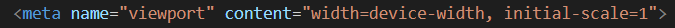

При помощи <meta> можно определять метатеги, которые используются
для хранения информации предназначенной для браузеров и поисковых систем.
Располагается такой тег в head.
Атрибут charset у <meta>
При помощи этого тега можно указать кодировку страницы.
Для корректной работы на каждой страницы стоит указывать кодировку utf-8
Важный отзывчивый метатег
Данная комбинация используется только на сайтах , которые будут реагировать на различные виды экранов(адаптивные).
name="viewport" дает инструкцию по управлению маштабами.
content="width=device-width, initial-scale=1" устанавливает ширину страницы в соответствии с шириной экрана.

Тег <link>
Для чего тег <link>
При помощи <link> можно подключать разные файлы , например CSS файлы или же шрифты
Атрибут rel
rel используется для указания отношения между документом текущем и файлом
rel="stylesheet" означает , что подключаемый файл имеет таблицу стилей(CSS-файл)
rel="alternate" альтернативный тип , например подключение XML HTML-файла
Атрибут href
href указывает путь к файлу , который мы хотим подключить.